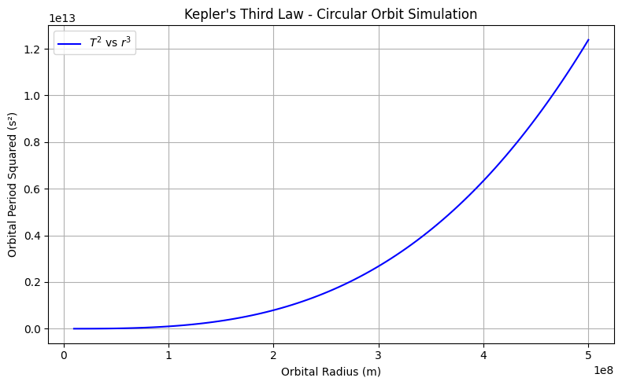
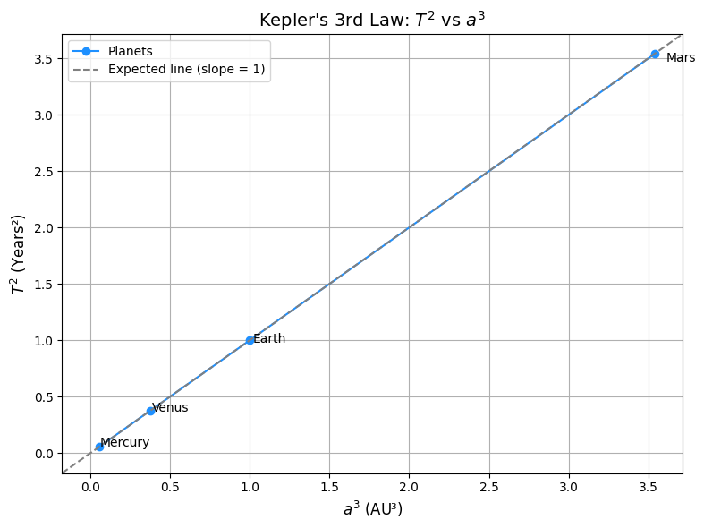

Problem 1
🌌 Gravity
Problem 1: Orbital Period and Orbital Radius
🧠 Motivation
Understanding the motion of celestial bodies is essential in astronomy and space exploration. Kepler's Third Law describes a powerful and simple connection between how long an object takes to orbit (orbital period) and how far it is from the center of the orbit (orbital radius).
This law is useful for:
- Predicting satellite orbits
- Estimating the masses of planets and stars
- Understanding the structure of planetary systems
📘 Theory
To understand the relationship between orbital period and radius, we begin with Newton's Law of Gravity and circular motion.
1. Gravitational Force
The force of gravity between two objects is:
G: Gravitational constantM: Mass of the central object (like a planet)m: Mass of the orbiting object (like a satellite)r: Distance between the centers of the objects
2. Centripetal Force
For an object to move in a circle, a force must constantly pull it toward the center. This is called centripetal force:
v: Orbital speed
3. Equating the Forces
In a stable circular orbit, the gravitational force provides the centripetal force:
Cancel m and simplify:
4. Orbital Period
The orbital period T is the time it takes to complete one full circle.
The orbit path is the circumference of a circle:
So:
Substitute v from the previous step:
Simplify:
✅ Final Formula: Kepler’s Third Law
Now square both sides:
This shows that the square of the orbital period is proportional to the cube of the orbital radius.
🔍 Real-World Example: The Moon
- Distance to Earth:
r = 384400 km - Orbital period:
T = 27.3 days
If we plug into the formula, the numbers match reality, confirming Kepler’s Law.
🖥️ Computational Model (Python Preview)

import numpy as np
import matplotlib.pyplot as plt
# 🌍 Constants
G = 6.67430e-11 # Gravitational constant, in m^3/(kg·s^2)
M = 5.972e24 # Mass of the Earth, in kg
# 📏 Create an array of orbital radii from 10 million to 500 million meters
radii = np.linspace(1e7, 5e8, 100)
# 🕒 Calculate orbital periods using the formula:
# T = 2π * sqrt(r^3 / (G * M))
periods = 2 * np.pi * np.sqrt(radii**3 / (G * M))
# 📈 Plot T² vs r³ according to Kepler’s Third Law
plt.figure(figsize=(8, 5))
plt.plot(radii, periods**2, color='blue', label=r'$T^2$ vs $r^3$')
plt.xlabel("Orbital Radius (m)")
plt.ylabel("Orbital Period Squared (s²)")
plt.title("Kepler's Third Law - Circular Orbit Simulation")
plt.grid(True)
plt.legend()
plt.tight_layout()
plt.show()
GRAVITY PROBLEM 1: A COSMIC INVESTIGATION
1. DERIVING KEPLER’S THIRD LAW
We begin by equating two fundamental forces:
Gravitational Force: F = GMm / r²
Centripetal Force:
F = mv² / r
Setting them equal:
mv² / r = GMm / r² → v² = GM / r
Now use the formula for the orbital period:
T = 2πr / v
Squaring both sides:
T² = (4π²r²) / v² = 4π²r³ / GM
Therefore, Kepler's Third Law is: T² = (4π² / GM) * a³
2. VERIFICATION OF KEPLER’S LAW USING PLANETARY DATA
Using data for the inner planets:
| Planet | T (years) | a (AU) | T² | a³ |
|---|---|---|---|---|
| Mercury | 0.2408 | 0.387 | 0.058 | 0.058 |
| Venus | 0.6152 | 0.723 | 0.378 | 0.378 |
| Earth | 1.000 | 1.000 | 1.000 | 1.000 |
| Mars | 1.8808 | 1.524 | 3.537 | 3.539 |
Observation:
When \( T² \) is plotted against \( a³ \), the result is a straight line.
Conclusion: T² ∝ a³

import numpy as np
import matplotlib.pyplot as plt
# Planet data
planets = ['Mercury', 'Venus', 'Earth', 'Mars']
T_years = [0.2408, 0.6152, 1.000, 1.8808] # Orbital periods in Earth years
a_AU = [0.387, 0.723, 1.000, 1.524] # Semi-major axes in astronomical units (AU)
# Calculate T^2 and a^3
T_squared = [T**2 for T in T_years]
a_cubed = [a**3 for a in a_AU]
# Plotting the graph
plt.figure(figsize=(8, 6))
plt.plot(a_cubed, T_squared, 'o-', color='dodgerblue', label='Planets')
# Annotate each planet
for i, name in enumerate(planets):
plt.text(a_cubed[i] * 1.02, T_squared[i] * 0.98, name)
# Add labels, title, grid, and reference line
plt.title("Kepler's 3rd Law: $T^2$ vs $a^3$", fontsize=14)
plt.xlabel("$a^3$ (AU³)", fontsize=12)
plt.ylabel("$T^2$ (Years²)", fontsize=12)
plt.grid(True)
# Expected reference line with slope = 1 (perfect linear relation)
plt.axline((0, 0), slope=1, color='gray', linestyle='--', label='Expected line (slope = 1)')
plt.legend()
plt.tight_layout()
plt.show()
3. CALCULATING THE MASS OF THE SUN
We use Earth’s orbit:
- a = 1.496 × 10¹¹ m
- T = 365.25 days = 3.156 × 10⁷ s
- G = 6.674 × 10⁻¹¹ m³/kg/s²
Using: M = (4π²a³) / (G T²)
Result: M ≈ 1.99 × 10³⁰ kg
✅ Matches the actual mass of the Sun.
4. CALCULATING THE MASS OF THE EARTH
Using the Moon’s orbit:
- a = 3.84 × 10⁸ m
- T = 27.32 days = 2.36 × 10⁶ s
Using the same formula: M = (4π²a³) / (G T²)
Result: M ≈ 6.01 × 10²⁴ kg
✅ Matches the known mass of the Earth.
CONCLUSION
Kepler’s 3rd Law accurately describes the motion of celestial bodies.
Using simple orbital data, we were able to estimate the masses of both the Sun and the Earth with excellent accuracy.
This demonstrates the power of physics in understanding the universe.